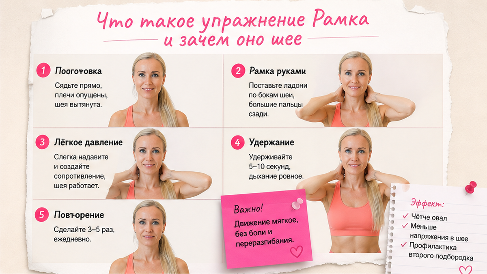
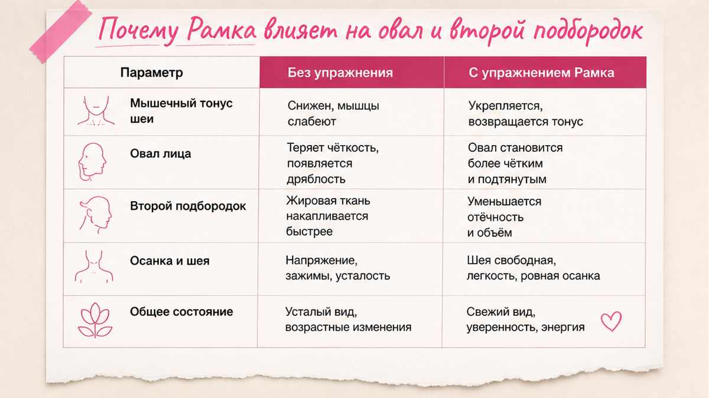
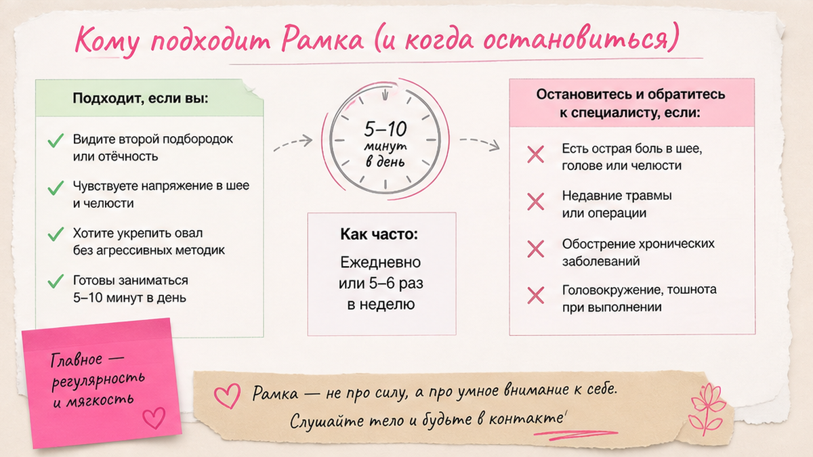

Упражнение "Рамка" - это мягкое вытяжение шеи с ладонями у лица: вы создаёте "рамку" руками, подбородок чуть назад, шея удлиняется без рывка. Дома достаточно 3-5 минут, 4 раза в неделю - в связке с осанкой и работой с языком, а не как "минус второй подбородок за неделю".
"Рамка" помогает не "выдавить" подбородок, а вернуть шее длину и тонус: когда голова уезжает вперёд, кожа под подбородком сбирается в складку. Мягкое вытяжение + привычка держать голову - база для упражнений от второго подбородка. При боли, головокружении или онемении - стоп и врач.
Разберём, что такое упражнение "Рамка", как оно связано с овалом лица, кому нельзя, и дам пошаговую технику дома - без обещаний "новая шея за три дня".
Женщины часто приходят с одной фразой:
"Я делаю упражнения для шеи. Смотрю ролики. А профиль всё равно "плывёт"".
Открываем зеркало сбоку.
Голова чуть вперёд.
Подбородок мягко "сползает".
И кажется, что появился второй подбородок - хотя вес тот же.
"Рамка" в моей практике - не про силу.
Про осознанное положение головы и мягкую работу с глубокими мышцами шеи.
Её часто показывают в шейной гимнастике - и она правда полезна, если делать спокойно.
Я не привязываюсь к названию методики.
Мне важно, чтобы вы поняли: ладони создают "рамку", а шея учится быть длиннее без рывка.
Но только "Рамка" без осанки и языка - как мыть окно, не закрыв кран.

Название простое: ладони как рамка у лица.
Большие пальцы у подбородка или нижней челюсти, остальные пальцы - вдоль щёк или у ушей.
Вы не давите лицо внутрь.
Вы создаёте опору и мягко направляете голову назад и вверх - будто "выдвигаете" затылок вверх.
Механизм. Шея - не только "видимая" передняя часть.
Там глубокие мышцы, которые держат голову и участвуют в положении челюсти.
Когда мы сутулимся или смотрим в телефон, они перегружаются.
"Рамка" учит включить глубокие сгибатели шеи и расслабить поверхностные "стягивающие" зоны - без резкого щелчка.
❌ Что "Рамка" не делает:
✅ Что обычно даёт регулярная мягкая практика:

Второй подбородок - не всегда лишний вес.
Часто это складка, которая появляется, когда голова уезжает вперёд, а язык не поддерживает нёбо.
Об этом подробнее в статье про второй подбородок и язык - здесь только связка с "Рамкой".
Осанка. Голова вперёд на 2-3 см - и кожа под chin уже "лишняя".
Вы можете быть стройной - и всё равно видеть мягкий второй подбородок на фото.
Компьютерная шея. Если весь день экран ниже глаз, "Рамка" без эргономики - временная передышка.
Имеет смысл параллельно поправить положение головы за гаджетами.
Лимфа. Застой жидкости в нижней трети усиливает "подушку".
Мягкая шея + лимфа снаружи (от подбородка к ушам) работают в паре - не вместо "Рамки", а после неё.
💡 Упражнения от второго подбородка в поиске часто ищут как "убрать". На практике сначала возвращают длину шее - и только потом ждут визуальный минус на фото.

Подходит, если:
Профиль. На фото видно, что голова ушла вперёд, а подбородок "сполз".
Усталость шеи. К вечеру тянет затылок, хочется потянуться.
После долгого сидения. Офис, машина, телефон - шея "съёжилась".
Уже делаете упражнения для шеи. "Рамка" - логичный элемент комплекса, не единственный.
❌ Стоп или только с врачом:
Сделайте: начните с 3 повторов и короткой амплитуды. Не делайте: резкий рывок головы назад "до упора".
Тип кожи и склонность к отёку - диагностика кожи поможет подобрать масло для массажа шеи после упражнения.
Техника упражнения "Рамка" начинается до движения руками.
Стопы. На полу, вес равномерно.
Лопатки. Чуть вниз и к позвоночнику - не "героическая" осанка, просто не сутулиться.
Язык. Кончик к верхним зубам, средняя часть к нёбу - мягко, без давления "до боли".
Это стабилизирует подбородок и не даёт челюсти "вылетать" вперёд.
Зубы. Разомкнуты или лёгкое касание - не сжимать.
Дыхание. Вдох носом на подготовке, выдох на мягком вытяжении. Не задерживать дыхание от усилия.
Зеркало. Сначала профиль - так видно, уезжает ли голова вперёд или назад ровно.
Ниже - домашний протокол. Это не соревнование по амплитуде.
Миниплан на 14 дней.
Дни 1-14: "Рамка" 5-7 повторов через день или 4 раза в неделю.
Каждый день: 3 раза проверить - не сжаты ли зубы, язык у нёба.
За экраном: экран на уровне глаз, раз в час - 20 секунд "подбородок назад".
День 1 и 14: одно фото профиля, дневной свет, без фильтра.
Сделайте: записывайте ощущения (легче / боль / головокружение). Не делайте: увеличивать повторы, если на следующий день шея "деревянная".
Многие ищут "упражнение рамка для шеи" как отдельное видео - и копируют амплитуду с экрана.
На видео мастер работает с телом, которое годами тренировал.
У вас задача проще: научиться чувствовать микродвижение и не гоняться за "как у неё".
Если после первого раза лёгкая усталость в глубине шеи - нормально.
Если боль в висках или "мушки" - уменьшите амплитуду вдвое или пропустите день.
"Рамка" - про длину шеи. Овал - про комплекс.
Язык к нёбу. 1 минута утром - из практики второго подбородка.
Мягкий буккальный не нужен каждый день - но если челюсть каменная, раз в неделю мягкая работа изнутри (см. буккальный массаж) может разгрузить жевательные.
Лимфа снаружи. 6 линий от подбородка к ушам и по шее вниз - медленно, без красных следов.
Уход. На сухой коже шеи - масло или крем, иначе после массажа будет стянутость.
Если к вечеру овал снова "плывёт" - не добавляйте повторы "Рамки".
Проверьте сон (подушка не слишком высокая), воду и положение головы за обедом.
Упражнения от второго подбородка работают в пакете - одна "Рамка" не обязана тянуть весь результат.
| Ошибка | Что бывает | Как правильно |
|---|---|---|
| Резко запрокинуть голову | Головокружение, боль | Микродвижение, профиль в зеркале |
| Давить большими пальцами на горло | Кашель, дискомфорт | Опора у подбородка, не на гортань |
| 20 повторов "чтобы быстрее" | Перегруз, хуже профиль | 5-7 повторов, качество важнее |
| Только "Рамка", без осанки | Эффект на часы | Экран + язык + сон на подушке пониже |
| Ждать минус см за неделю | Бросить практику | Фото раз в 2 недели, один свет |
"Рамка" - не про силу шеи, а про правильное положение головы. Там, где нужен врач, упражнение только маскирует проблему.
Это вытяжение с опорой ладоней и акцентом на глубокие мышцы. Многие упражнения для шеи - про повороты и наклоны. "Рамка" - про ось: голова назад-вверх без рывка.
3-4 раза по 5-7 повторов - достаточно для дома. Ежедневно и сильно - часто перегружает шею.
Если он от положения головы - да, постепенно, в связке с языком и осанкой. Если это жировая подушка при наборе веса - упражнение улучшит тонус, но не заменит общую работу с телом.
Только после очного осмотра и рекомендаций врача. Без боли и без резких движений. При обострении - пауза.
Слишком большая амплитуда или задержка дыхания. Уменьшите движение вдвое. Не проходит - стоп, невролог или ЛОР по ситуации.
Не обязательно. "Рамка" - один элемент. Можно добавить 2-3 мягких движения из вашего привычного комплекса, если нет противопоказаний.
Шаги 1-3 один раз: исходное положение, "рамка" руками, одно мягкое вытяжение с выдохом. Этого достаточно для первого дня.
Лучше за 2-3 часа до сна - шея может "ожить" и мешать расслабиться. Утром или днём - идеально, особенно после долгого сидения.
После упражнения и лимфы - да, на сухой коже. Активы подбирайте по типу кожи, иначе будет стянутость.
Достоверность: материал основан на практике Елены Шимановской в фейс-йоге. Не медицинская рекомендация. При боли, онемении, головокружении - очный осмотр врача.
🔥 Мой Telegram-канал «Silver Cream»
❓ Делали ли вы "Рамку" раньше - легко или было головокружение? Замечаете второй подбородок на фото или в жизни? Что уже пробовали для шеи? Напишите в комментариях ⤵️